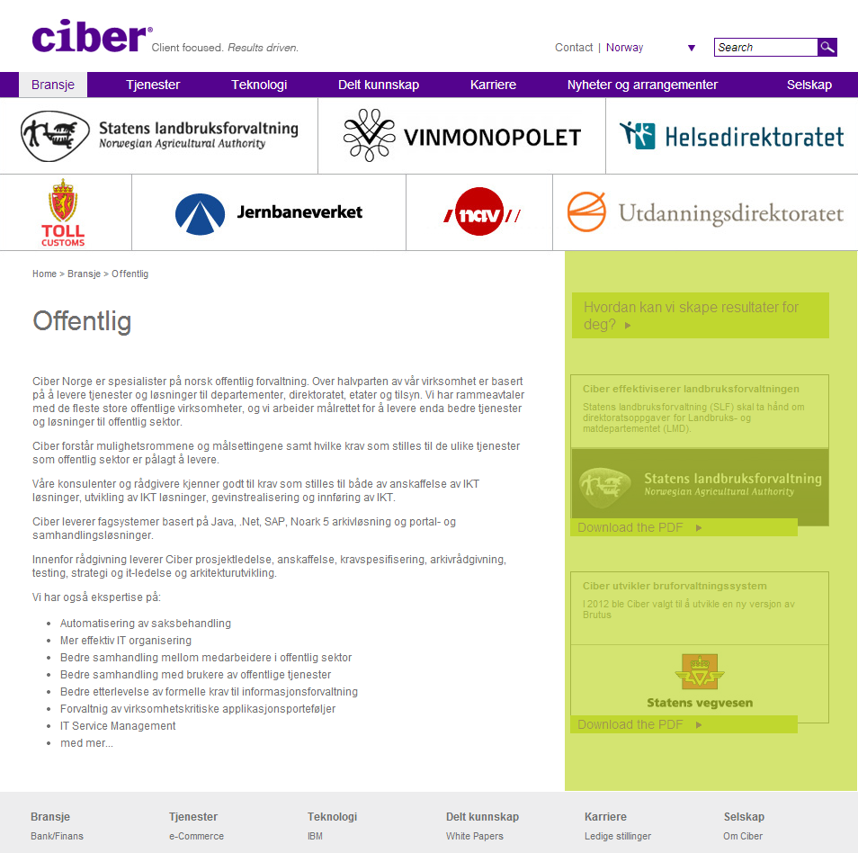

MS 70-480


HTML(5) CSS3 JavaScript
Bøker
Praktisk
- 40 spørsmål
- 2,5 timer
- Tre kategorier
- Varierte spørsmål
FAQ

Header
Navigasjon
Seksjoner

Footer

Sidestilt info
Pre-HTML5
<!DOCTYPE html PUBLIC "-//W3C//DTD XHTML 1.0 Transitional//EN"
"http://www.w3.org/TR/xhtml1/DTD/xhtml1-transitional.dtd">
<html>
<head></head>
<body>
<div id="heading"></div>
<ul id="navPrimary"></ul>
<div id="hp_content"></div>
<div id="hp_features"></div>
<div id="footer"></div>
</body>
</html>
HTML5
<!DOCTYPE html>
<html>
<head></head>
<body>
<header></header>
<nav></nav>
<section></section>
<aside></aside>
<footer></footer>
</body>
</html>

Media queries
Media queries
@media (min-width: 700px) { ... }
@media (max-width: 800px) and (orientation: landscape) { ... }
@media print, orientation { ... }
Flexbox
Bestemmer layout
Fleksibelt!
Flexbox
display: flex
flex-direction: row | row-reverse | column | column-reverse
justify-content: flex-start | flex-end | center
| space-between | space-around
align-items: flex-start | flex-end | center | baseline | stretch
Flexbox playground
*-shadow

box-shadow
box-shadow: 1px 2px 5px 2px rgba(50, 50, 50, 0.75)
text-shadow
text-shadow: 1px 2px 5px rgba(50, 50, 50, 0.75)
...mye mer
Konsumering av data
XMLHttpRequest
if (window.XMLHttpRequest)
{ // code for IE7+, Firefox, Chrome, Opera, Safari
xmlhttp = new XMLHttpRequest();
}
else
{ // code for IE6, IE5
xmlhttp = new ActiveXObject("Microsoft.XMLHTTP");
}
xmlhttp.open("GET","books.xml",false);
xmlhttp.send();
xmlDoc = xmlhttp.responseXML;
XMLHttpRequest
xmlhttp.onreadystatechange = function()
{
if (xmlhttp.readyState == 4 && xmlhttp.status == 200)
{
xmlDox = xmlhttp.responseXML;
}
}
JSON
var json = '{"result":true,"count":1}',
obj = JSON.parse(json);
Web workers
Web workers
var worker = new Worker("worker_script.js");
worker.postMessage("Hello World!");
worker.onmessage = function(event) {
alert("Received message " + event.data);
doSomething();
}
worker.terminate();
Event bubbling
Event bubbling
Event bubbling
Event bubbling
Event bubbling
Event bubbling
addEventListener(type, listener, useCapture)
Lykke til!